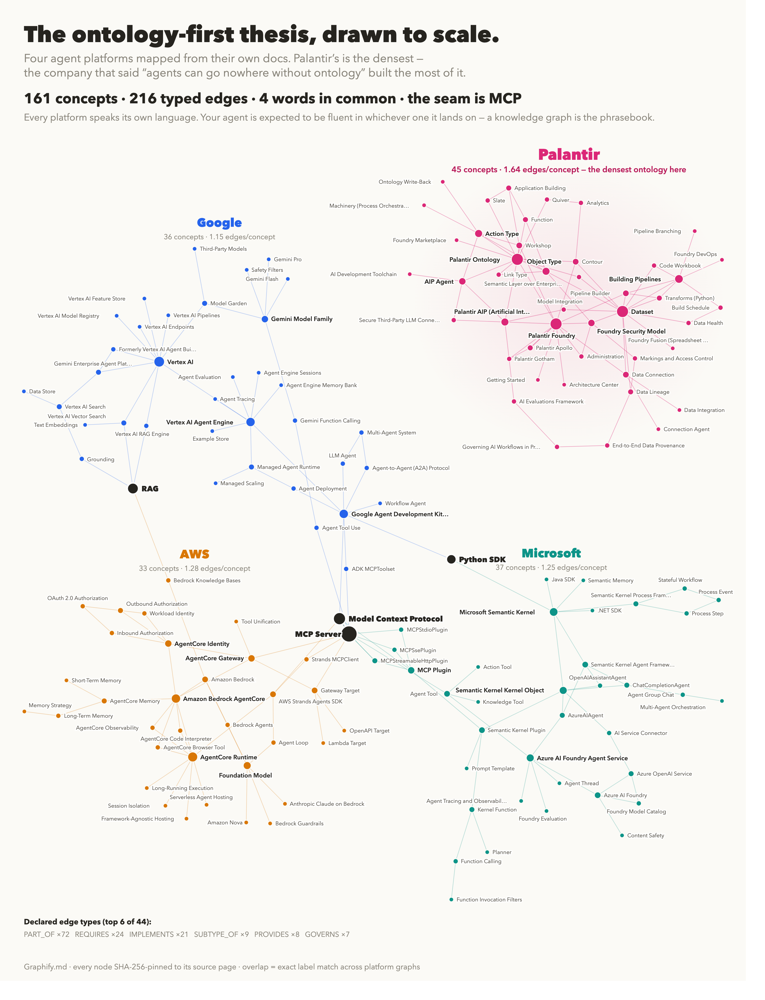

Eleven AI developer and agent platforms as typed, source-pinned graphs. Search concepts, compare vocabulary across vendors, inspect MCP touchpoints, traverse declared relationships, and verify source hashes from one local MCP server.
"The graph doesn't guess - it traverses. Every answer traces to a declared edge."

This poster maps the four v0.3.0 agent-platform additions: AWS Bedrock AgentCore, Google's Gemini/Vertex agent stack, Microsoft's AI agent stack, and Palantir Foundry. That slice contains 161 concepts and 216 typed edges; the full MCP package includes 11 domains, 475 nodes, and 550 typed CSV edges.
475 nodes · 550 typed CSV edges · hover to explore sample vocabulary · colored by platform family
Chains · Agents · LCEL · RunnableSequence · Memory · Retrievers · LangSmith · Output Parsers
Graph State · StateGraph · Nodes · Edges · Cycles · Persistence · Checkpointing · Human-in-the-Loop
Chat Completions · Assistants · Embeddings · DALL-E · Whisper · Function Calling · Tool Use · Batch API
Messages API · Tool Use · Prompt Caching · Computer Use · Extended Thinking · Streaming · Batch Processing
Hub · Transformers · Spaces · Datasets · Inference API · PEFT · Accelerate · Safetensors
Converse API · Guardrails · Knowledge Bases · Agents · Model Catalog · Prompt Management · Titan Embeddings
Model Garden · Gemini API · Evaluation · Fine-tuning · Pipelines · Feature Store · Vertex AI Search
Runtime · Gateway · Memory · Identity · Observability · Strands · MCP · RAG touchpoints
Vertex AI · Agent Engine · ADK · MCPToolset · A2A · Memory Bank · Evaluation · Deployment
Azure AI Foundry · Semantic Kernel · MCP plugins · Agent Service · Tools · Memory · Governance
Ontology · Object Types · Link Types · Action Types · AIP · Datasets · Provenance · Governance
list_atlas() 11 domains, 475 nodes, 550 typed CSV edges find_mcp_touchpoints() Returns MCP concepts in AWS AgentCore, Google ADK, Microsoft Semantic Kernel, Anthropic SDK, and related platform graphs. get_concept_context("Palantir Ontology", "palantir-foundry") Returns direct outgoing and incoming typed relationships plus source hash. compare_platforms("memory") Shows which packaged platforms declare memory-related concepts.
# pip pip install ckg-ai-platforms # Claude Desktop { "mcpServers": { "ai-platforms": { "command": "uvx", "args": ["ckg-ai-platforms"] } }} # Python library from ckg_ai_platforms import compare_platforms, get_concept_context matches = compare_platforms("MCP") context = get_concept_context("AgentCore Gateway", "aws-bedrock-agentcore")
| Tool | Description |
|---|---|
| list_atlas() | All packaged platform graphs with counts and source coverage |
| compare_platforms(query) | Search one term across all vendor/platform graphs |
| find_mcp_touchpoints() | Locate MCP-related concepts and direct relationships |
| get_concept_context(concept, domain) | Source-pinned direct typed relationships |
| query_ckg(concept, domain, depth) | Typed subgraph around any concept, 1-5 hops |
| get_prerequisites(concept, domain) | Compatibility tool for upstream relationship chains |
| search_concepts(query, domain) | Fuzzy search within any domain |
| ask_platform(question, domain) | Natural language query with domain auto-detection |
Give an agent a small map before it reads pages of vendor prose. The server helps it find platform concepts, compare vocabulary, inspect MCP touchpoints, traverse declared relationships, and verify sources.
Pattern: public docs to source-pinned graph to MCP tools.
{kind=link}